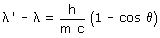

|
Los rayos X que se envían a través de un gas de electrones libres, cambian su dirección de propagación en un ángulo θ y aumentan su longitud de onda mientras que los electrones son impulsados con velocidad v Experimentalmente se obtiene la siguiente relación:  |
No había manera de justificar la fórmula abordando el problema como la dispersión de una radiación luminosa por partículas materiales (Lo que ocurre en el cielo con la luz del Sol: la radiación azul es desviada en todas direcciones por las moléculas de nitrógeno)
Admitiendo que la radiación estaba formada por fotones de energía E = h·f y momento lineal p = h·f/c se podía interpretar el efecto Compton como un choque oblicuo entre un fotón y un electrón
 |
El fotón choca con el electrón y le cede parte de su energía con lo que el electrón empieza a moverse. Al perder energía el fotón disminuye la frecuencia y el momento lineal |
Aplicando las ecuaciones del choque oblicuo a esta situación se obtenía sin problemas la relación experimental de Compton.
Este resultado confirmó la hipòtesis del carácter corpuscular de las radiaciones luminosas